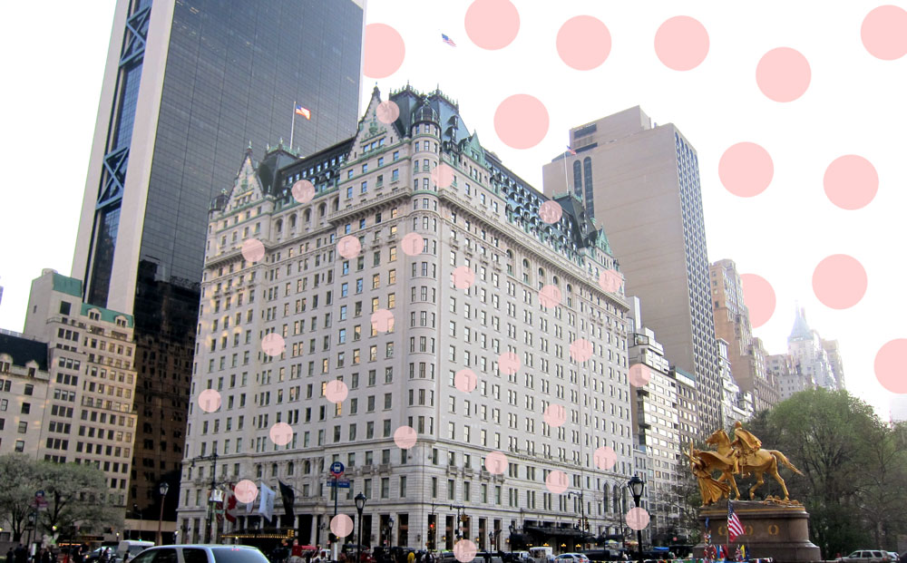

New York City, also known as ‘the city that never sleeps’ is one of the first cities that comes to mind when someone mentions USA. Being the most populous city in the US, New York impacts all the fields of commerce, finance, media, art, fashion, research, technology, education, and entertainment greatly. Manhattan being the largest borough of NYC is home to many famous landmarks such as Times Square, the 9/11 memorial, Central Park, Grand Central Station, the Brooklyn Bridge and the Empire State building.
The 102 story Empire State building is the second tallest skyscraper in NYC and is located on 5th Avenue. From the viewing platform of the Empire State, you get a 360 degree bird's eye view of the busiest city in the world. The main observation deck is on the 86th floor and for an additional amount of money you can take the elevator up to the 102nd floor to the top deck. Located on the 80th floor is the official gift shop which sells Empire State apparel and memorabilia. The Dare To Dream Exhibit is also on the 80th floor which chronologically presents the planning and construction of the Empire State Building. The building is open daily from 8am to 2am. The Empire State Building is normally lit in its signature white colour but when there is a holiday, event or tragedy, the buildings lights change colour. This world famous landmark is not one to miss!
The Statue of Liberty on Liberty Island is one of the most iconic landmarks within NYC. Gifted from France, the statue is of a robed female figure representing the Roman goddess - Libertas, who bears a torch and a tablet evoking the law which is inscribed the date of the American Declaration of Independence, July 4, 1776. The statue is an icon of freedom and of the United States, and was a welcoming sight to immigrants arriving from abroad. The ferry which departs from Battery Park. This boat ride is around 20 minutes one way and if you catch the ferry to Liberty Island, it also stops at Ellis Island. When you get to the island, you can pick up an auto device tour for free. To enter the Statue Of Liberty you have to go through another security checkpoint, (there is a security checkpoint before you board the boat) and then you are able to go up the Statue. There is a gallery of artefacts and then 2 proper viewing levels. To visit the highest viewing point, you have to pay more money. The NYC skyline is just as amazing from the Statue Of Liberty as from the bottom of the Statue on the Island. This is one of the most amazing landmarks to visit and you can’t visit NYC without visiting the Statue Of Liberty!
The 9/11 memorial is a remembrance memorial for the Twin Tower attack in 2001 and the World Trade Bombing in 1993. Each of the victims names are engraved around the twin memorial pools. The Memorial plaza features two enormous waterfalls and reflecting pools which are set within the footprints of the original Twin Towers. These pools are designed to look like infinity pools as you can’t see the bottom. There is also a museum which documents the impact of the events and also the significance of the events. Through interactive technology, archives, narratives and a collection of artifacts, the museum commemorates those who lost their lives due to these attacks. The 9/11 Memorial was opened to the victims families 10 years after the Twin Tower attack on the 11th of September 2011. Since then, they have built a new skyscraper which goes by the name of ‘One World Trade Center’ or ‘Freedom Tower’. This is the tallest skyscraper in the western hemisphere and was built on the site of the original 6 World Trade Center. The 9/11 memorial is a must see landmark as the once shattered site has been transformed into an amazing space showing the importance of those who lost their lives.
